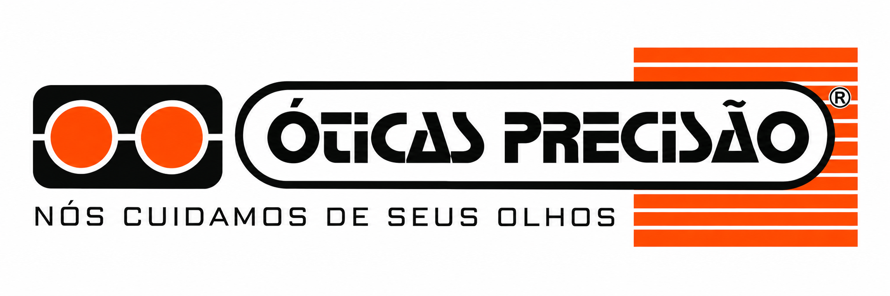

Óculos de grau
Armações e lentes para diferentes necessidades visuais e estilos.

ÓTICAS PRECISÃO · CIRCUITO DAS ÁGUAS MG
Óculos, lentes e atendimento próximo para você enxergar com conforto, confiança e estilo.
01 — AS ÓTICAS PRECISÃO
As Óticas Precisão fazem parte da vida do Circuito das Águas e unem atendimento próximo, estilo e soluções para diferentes necessidades visuais.
Nosso compromisso é ajudar você a encontrar os produtos certos para sua rotina, sua receita e sua personalidade.
02 — O QUE VOCÊ ENCONTRA
Armações e lentes para diferentes necessidades visuais e estilos.
Proteção e personalidade para acompanhar sua rotina.
Opções e tratamentos para mais conforto e tecnologia no dia a dia.
Orientação para ajudar você a escolher com segurança e praticidade.
03 — NOSSAS LOJAS
Encontre as Óticas Precisão mais próximas de você e fale diretamente com nossa equipe.
Av. Dom Pedro II, 263
Centro · São Lourenço/MG
(35) 3332-4670
Ver no mapa
Rua Senador Camará, 98
São Lourenço/MG
(35) 3331-3422
Ver no mapa
Av. Camilo Soares, 719
Centro · Caxambu/MG
(35) 3341-2624
Ver no mapa
Avenida Prefeito Dilermando de Oliveira, 22
Centro · Conceição do Rio Verde/MG
(35) 98401-1950
Ver no mapa
Rua Dr. Cornélio Magalhães, 10
Centro · Baependi/MG
(35) 3343-1692
Ver no mapa
Rua Coronel Serafim Pereira, 15
Centro · Cruzília/MG
(35) 3346-1919
Ver no mapa
Rua Doutor Garção Stockler, 90
Centro · Lambari/MG
(35) 98409-9854
Ver no mapa04 — CONTATO
Para dúvidas, orçamento ou informações sobre produtos, fale com uma de nossas lojas.
Falar com uma loja